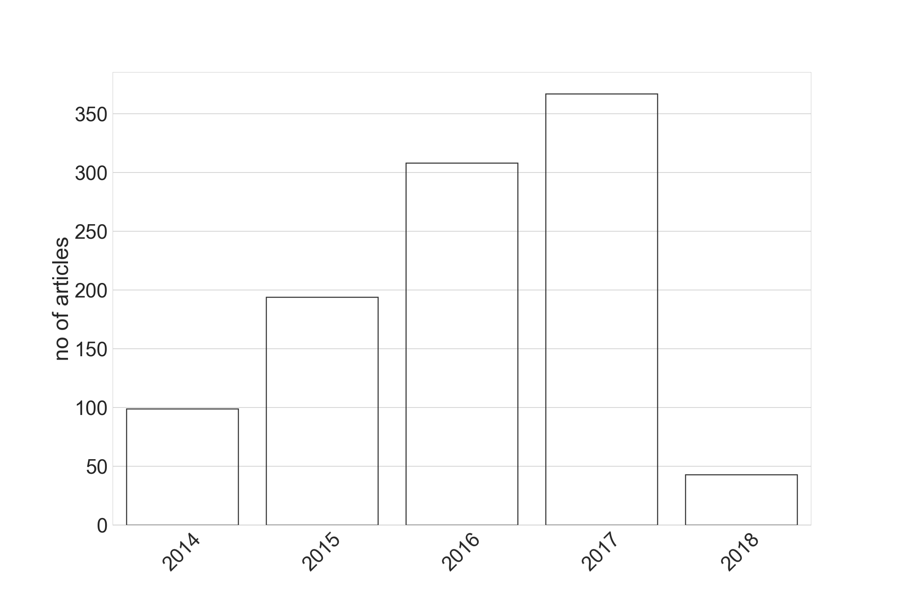

Text data collection
Using Selenium: Java's browser automation framework we have webscraped text data from two sources:
(1) Headspace blog,
(2) Access to insight - Readings in Theravada Buddhism
We have webscraped all 949 articles from the Headspace blog until the end of 2017.

Main categories
Number of articles
Birth
4
Death
38
Health
86
Living
247
Meditation
183
Sport
13
Work
15
From the Access to insight website we have retrieved all (online) available1269 english translations of suttas constituting the Pali canon, additionally we have included commentary to The Satipatthana Sutta because of its importance to the analysis.
Text-mining Keywords Frequency
Analysis based on the frequency of appearances for all words in the text
Frequency: number of appearances of every word divided by the number of articles/suttas
Co-occurrence analysis
Aim: Exploring the relationship between topics
Def.: Pairs of terms which are mentioned together in the articles/suttas
How: The number of texts containing both terms is divided by the number of texts including our previously identified keyword of interest
We present normalized results consisting of selected top 30 co-occurences
Co-occurrence analysis: Results sample
Next steps: Topic modeling using (LDA and doc2vec)